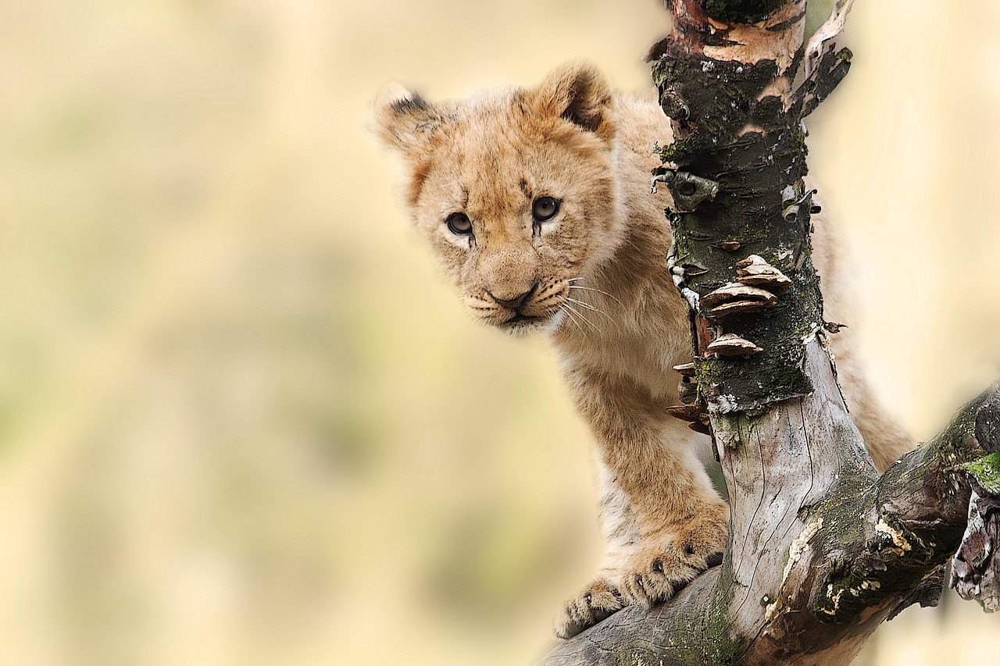

A vadmacska egy ragadozó állat. A macskák csoportjába tartozik.

A vadmacska magányos és területileg élő macskaféle, alkalmazkodott az erdei és bozótos környezethez. Táplálékukban rágcsálók, madarak és nyulak szerepelnek, élettartamuk 6 és 12 év között változik.
Tudj meg többet!| fajta | hol él | mit eszik |
|---|---|---|
| Európai vadmacska | Európa és Nyugat-Ázsia lombhullató és elegyes erdeiben, főként a sűrű, háborgatatlan erdőségekben. | Elsősorban kisrágcsálókat (egerek, pockok), mezei nyulakat, kisebb madarakat és kétéltűeket. |
| Kanadai hiúz | Észak-Amerika (Kanada és Alaszka, valamint az USA északi részei) hideg, taiga típusú fenyőerdeiben. | Szinte kizárólag hónyulat fogyaszt, de szükség esetén kisebb rágcsálókat és madarakat is elfog. |
| Ocelot | Közép- és Dél-Amerika trópusi esőerdeiben, mangrove mocsaraiban és sűrű cserjéseiben. | Kisebb emlősöket (rágcsálók, oposszumok, fiatal iguanák), madarakat, halakat és rákokat. |